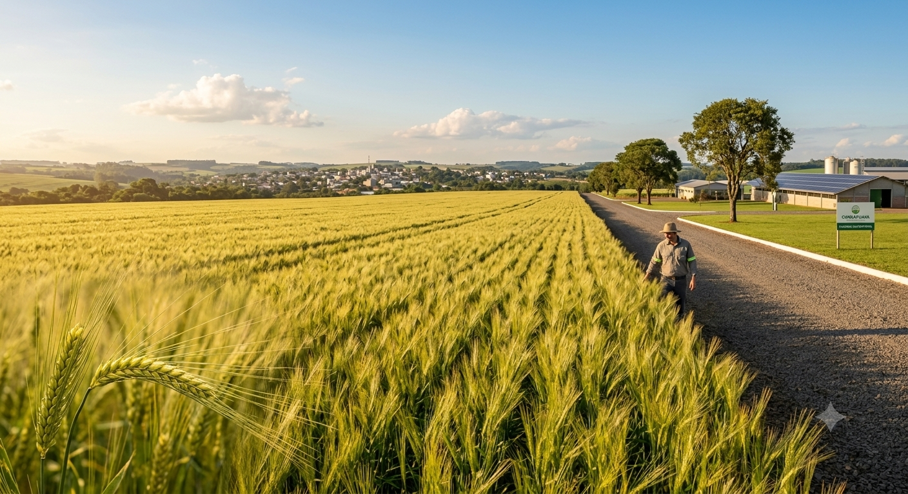
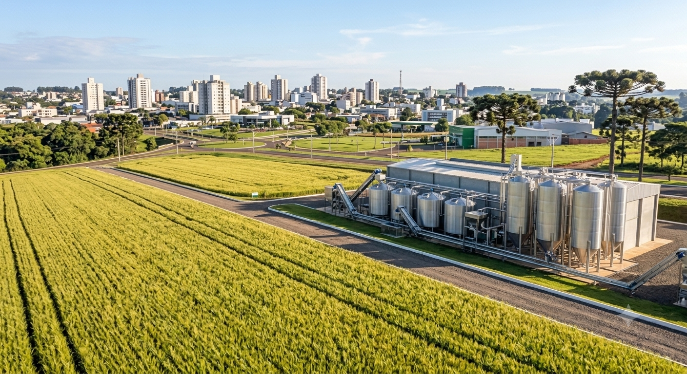

A Jornada do Malte em Guarapuava
Agro forte, futuro sustentável: o equilíbrio perfeito entre a produção tecnológica de cevada e a preservação do meio ambiente.
A Cadeia Produtiva da Cevada

1. O Cultivo no Campo
Tudo começa no solo fértil de Guarapuava. Com manejo responsável, rotação de culturas e monitoramento tecnológico, a cevada cresce forte e saudável.

2. A Indústria e o Malte
Após a colheita, os grãos vão para a maltearia. Através de processos controlados de germinação e secagem, a cevada se transforma em malte com alta eficiência energética.

3. Conexão com a Cidade
O malte processado abastece indústrias e gera emprego e renda, conectando diretamente a economia do campo com o desenvolvimento tecnológico urbano.
💡 Você Sabia?
Clique no botão abaixo para descobrir uma curiosidade sobre a cevada e a sustentabilidade!
Galeria Interativa
Práticas Sustentáveis
O uso do plantio direto e a rotação de culturas protegem a estrutura do solo de Guarapuava, evitando a erosão e mantendo os nutrientes de forma natural.
Sistemas modernos de irrigação monitoram a umidade do solo em tempo real, aplicando a quantidade exata de água necessária e evitando desperdícios industriais.
Drones e sensores agrícolas mapeiam as lavouras, permitindo a aplicação localizada de insumos, reduzindo o impacto ambiental e otimizando a produção.
🎬 Vídeo Educativo
📖 História em Quadrinhos
Teste Seus Conhecimentos
Texto da Pergunta
Resultado do seu Quiz
Você acertou X de Y perguntas.